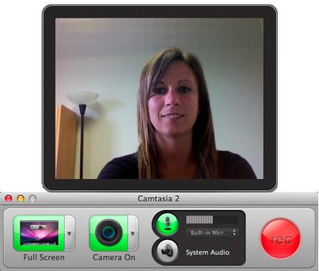

Recording using a preset area:
- Open Camtasia or choose File > New Recording.
- Select the audio and camera options:
- Camera video:
Click to enable camera video. From the Camera menu, select the camera device, such as the built-in camera. A preview of the camera appears.

- Microphone audio:
Microphone audio is recorded by default. From the Audio menu, select the microphone.

- System audio:
Click to enable system audio recording. System audio is the sound from your computer including mouse-click sounds, audio from your speakers, etc.

If the TechSmith Audio Capture Component is not installed, click the Need System Audio help button to install it.
- Select a preset from the Screen menu.

- Click the Select Area button to view and edit the preset area on the screen.

- To move the recording area, click within the recording area and drag it to another location on the screen.
- If the preset recording area is too small to fit the content to record, you can record at larger dimensions, but at the same aspect ratio as the preset. Enter these dimensions into the Width and Height fields. See the Aspect ratio chart to help determine the appropriate dimensions.
You cannot access any applications or system settings while in the selection mode. Make sure to edit the audio settings, application or window position, and other system settings before selecting the area to record. Click the Cancel Selection button or press Esc to edit these items.
- Click the Record button or press Command-Shift-2 to start recording.

- Press Command-Shift-2 to pause the recording or Command-Option-2 to stop the recording.
Camtasia adds the recording file (.trec or .cmrec) into the Media tab in the Assets and onto the timeline.
See also
Record custom dimensions
Record topics
 Record with standard dimensions (presets)
Record with standard dimensions (presets)